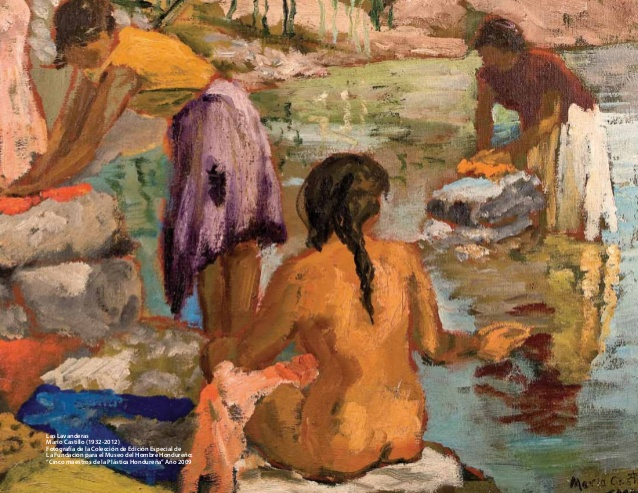

Artes Visuales son formas, expresiones de arte que se encuentran enfocadas preeminentemente a la creación de trabajos que son visuales por naturaleza.
Son una manifestación artística, expresiva, de percepción visual en la cual el individuo crea y recrea mundos naturales o fantásticos mediante elementos materiales utilizando diversas técnicas que le permiten expresar sus sentimientos, emociones y percepciones del mundo que lo rodea. |
|
La pintura en el territorio de la actual Honduras existe desde tiempos precolombinos.
Con la llegada del europeo colonizador se dan diversas técnicas que se introdujeron durante la colonización española y que sufrieron modificaciones como efecto del mestizaje que luego de la independencia se ahondan aún más por factores endógenos y exógenos como efecto de las transformaciones vigentes en dicha coyuntura.
Galeria de obras mas representativas de la pintura hondureña
Nombre: Lavanderas
Autor: Mario Castillo
Corriente: Impresionismo |
Nombre: Oro Negro
Autor: Ezequiel Padilla
Corriente: Expresionismo |
Nombre: La carta del tarot
Autor: Felipe Burchard
Corriente: Realismo Magico |
Nombre: San Antonio de Oriente
Autor: Jose Antonio Velazques
Corriente: Primitivismo |
Nombre: Las Monjas
Autor: Pablo Zelaya Sierra
Corriente: Cubismo |
Nombre: Los herederos de la calidad
Autor: Armando Lara
Corriente: Renacentismo |
Arquitectura |
___________________________________________________________________________________________________________________________________________________ |
Construcciones de tipo colonial
Nombre: Catedral Inmaculada Concepcion
Lugar: Comayagua |
Nombre: Catedral San Miguel Arcangel
Lugar: Tegucigalpa, Francisco Morazan |
 Nombre: Fortaleza de San Fernando
Lugar: Omoa, Cortes |
Construcciones de tipo Maya
Nombre: Escalinata de los jeroglificos
Lugar: Acropolis, Copan |
Nombre: Templo Rosalila
Lugar: Copan, Honduras |
Nombre: Gran Plaza de las Estelas
Lugar: Copan, Honduras |
Teatro |
_________________________________________________________________________________________________________________________________________________________ |
En Honduras históricamente se practica teatro europeo desde el siglo XVI, la primera presentación teatral en Honduras fue el Diablo Cojuelo, una obra del dramaturgo novelista español Luis Vélez de Guevara, la presentación se llevó a cabo en el año 1750, al aire libre, en la ciudad de Comayagua.
Con el final de la Primera Guerra Mundial, en el período de bonanza de la Economía de Enclave, el Teatro se volvió una necesidad para los grupos de poder y surge la urgencia de construcción de Teatros, así con el Enclave Minero se establece el teatro en la ciudad de San Juancito y en El Mochito de la compañía minera y con la Compañía UFCo del Enclave Frutero que apoya los regímenes de donde surgirán los partidos tradicionales se establecen Teatros para entretener al pueblo laborante en los campos pero es con el régimen del fundador del Partido Nacional que se inicia la construcción del Teatro Nacional que lleva su nombre Manuel Bonilla Chirinos y el Avellaneda en la ciudad de Comayagüela. Al mismo tiempo surge la necesidad del arte popular de expresarse en el arte de las tablas, resultante de la presión del pueblo se da la educación pública y es en las escuelas donde saldrán los primeros pasos del teatro popular. Después de la segunda mitad del siglo XX resaltan entre otros Miguel Murillo Selva.
| |
|
______________________________________________________________________________________________________________________________________________________________________
|

 bellasarteshn
bellasarteshn Escuela Nacional de Bellas Artes
Escuela Nacional de Bellas Artes